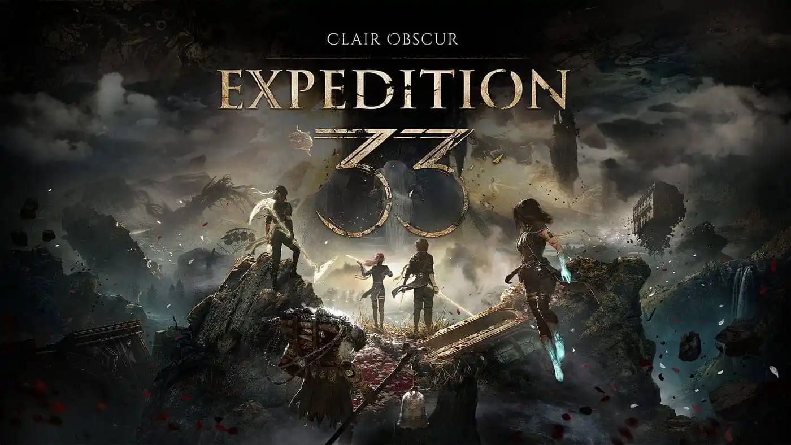

Clair Obscur : Expedition 33

Résumé
Clair Obscur : Expedition 33 est un jeu de rôle au tour par tour développé par Sandfall Interactive. Une expédition tente chaque année d'arrêter la Peintresse, qui efface une génération entière en peignant un nombre sur son monument.
Critique Metacritic
Metacritic a attribué à Clair Obscur : Expedition 33 une note globale très positive.
| Metascore |
92 / 100 |
| Positive |
83 Reviews |
| Mixed |
1 Reviews |
| Negative |
0 Reviews |
92
Avis général des joueurs
Une direction artistique superbe et des combats au tour par tour dynamiques grâce aux esquives et aux parades en temps réel.
3
Notre avis
Un tour par tour ? Plutôt un "Le mob me tape pendant 10 tours d'affilée pendant que je dois tout parer". Un jeu bien français on le ressent bien avec les musiques, on se croirait au 18ème siècle et ne parlons pas de l'histoire qui n'a strictement aucun sens on n'y comprend rien du tout
Acheter Clair Obscur : Expedition 33
Vous pouvez acheter Clair Obscur : Expedition 33 sur les plateformes suivantes :